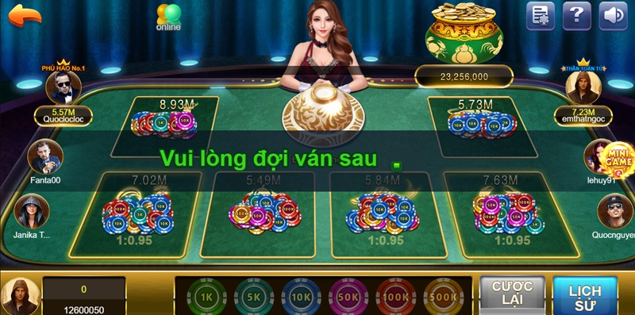

Bầu Cua Online là cái tên không thể bỏ lỡ khi nhắc đến tựa game dân gian từ xưa đến nay. Tuy nhiên khi tham gia trò chơi cần dựa vào yếu tố may rủi khi cá cược. Trò chơi dân gian này có luật chơi vô cùng đơn giản, nhưng muốn rinh thưởng lớn không phải là dễ dàng. Để biết thêm về trò chơi, cùng chúng tôi theo dõi thông tin từ A -Z.
Bầu Cua Online là trò chơi dân gian được nhiều anh em đánh giá cao và lựa chọn để giải trí và ăn cược. Để hiểu rõ về trò chơi cùng anh em chúng tôi tìm hiểu.
Từ thời xưa, đây được biết đến là tựa game cực kỳ phổ biến để anh em sum họp mỗi dịp lễ Tết. Ngày nay khi cuộc sống ngày càng hiện đại, trò chơi này đã được chuyển thể ra phiên bản online. Từ đó giúp anh em có thể thỏa sức tham gia bất kỳ thời gian, không gian nào. Đặc biệt, anh em có thể lựa chọn chơi trực tuyến trên nhiều thiết bị di động theo ý muốn.
Không những vậy, hình thức chơi Bầu Cua Online cũng hoàn toàn đơn giản, không có gì quá khác biệt so với hình thức truyền thống thời xưa. Mô hình này vẫn bao gồm 3 xúc xắc. Tương ứng với đó chính là 6 mặt với 6 con vật quen thuộc của Việt Nam. Lúc này, anh em chỉ cần thả tiền đặt vào cửa cược các con vật mà mình lựa chọn. Lúc này nếu xúc xắc vào đúng con vật bạn đặt cược sẽ dành phần thắng lợi.
Đây là trò chơi dân gian có nguồn gốc từ nước Trung và có tên gọi tiếng Trung đó chính là Hoo Hey How . Đây cũng là cái tên nhất định để sử dụng gọi tên trên toàn quốc. Hoo Hey How cũng mang nghĩa chính là Ngư Hà Giải, hay còn được hiểu là Cá Tôm Cua. Ở thị trường cá cược tại nước Anh và Mỹ cũng xuất hiện những tựa game tương tự.
Cho đến ngày nay thì đây được biết là trò chơi được phổ cập trên khắp thế giới. Tùy từng vùng miền, đất nước khác nhau mà trò chơi này sẽ mang luật lệ riêng biệt.
Tải bầu cua cho iphone sẽ được áp dụng các linh vật chính chủ như bầy, gà, nai, tôm, cá, cua. Khi chơi game cần chuẩn bị bàn bầu cua bao gồm 6 ô riêng biệt, mỗi ô sẽ được in hình các linh vật mà chúng tôi nêu trên. Theo thứ tự trái qua phải và trên xuống dưới đó chính là các linh vật: Nai, bầu, gà, cá, cua và tôm là cuối cùng.
Bên cạnh đó, tựa game này sẽ cần thêm 3 viên xúc xắc cùng 1 bộ chén đĩa. Xúc xắc cần đáp ứng đủ tiêu chuẩn là 6 mặt, mỗi mặt của xúc xắc sẽ được in hình các linh vật riêng biệt.
Bầu Cua Online là trò chơi được chơi thành rất nhiều lượt. Đồng thời, đây là tựa game không bị giới hạn về số lượng anh em khi tham gia. Đặc biệt, khi bắt đầu mỗi lượt chơi Bầu Tôm Cua Cá thì nhà cái sẽ xúc xắc 3 viên này. Kết quả của các viên xúc xắc sẽ được nhà cái giữ kín trong cặp bát và đĩa.
Lúc này người chơi cần phải đặt tiền vào cửa cược với các con vật mà mình tâm đắc. Anh em có thể đặt 1 cửa hay nhiều cửa tùy ý muốn.
Khi tất cả các anh em đặt cược thành công thì nhà cái lúc này bắt đầu hé lộ kết quả. Nếu như trong 3 viên này mà xuất hiện cửa cược của bạn, lúc này bạn sẽ được nhà cái trả tiền cược cùng tiền thưởng. Tiền thưởng của bạn sẽ càng nhiều khi đặt cược càng nhiều. Ngược lại nếu không xuất hiện cửa cược của bạn thì chắc chắn sẽ mất trắng.
Để có thể chơi lắc bầu cua thắng trận thì anh em cần phải xem xét thật kỹ lưỡng lối chơi, kinh nghiệm và các mẹo của các cao thủ hiện nay. Dưới đây là chia sẻ của cao thủ tựa game dân gian này.
Đối với những anh em là cao thủ chơi app Bầu Cua Online chuyên nghiệp thì các mặt xúc xắc xuất hiện với tỷ lệ nhiều nhất luôn được chú ý. Vì đây chính là mặt sẽ xuất hiện với tần suất dày đặc trong cả một trận chơi. Chính bởi vậy, nếu như bạn thấy mặt linh vật nào ra liên tiếp thì lúc này anh em hãy tranh thủ đặt cược vào mặt đó.
Không những vậy, kinh nghiệm chú ý về tần suất của các linh vật xuất hiện còn được nhiều cao thủ áp dụng trực tiếp vào soi cầu xổ số hiện nay. Đây cũng là tips khiến anh em ăn tiền khủng.
Một tips để anh em có thể đặt chân vào Bầu Cua Online và bước ra với những chiến thắng đó chính là dựa vào cách tính tổng. Khi tính ra mặt nào cao thì anh em hãy đặt cược vào mặt đó. Chẳng hạn như khi mở kết quả xúc xắc có 2 bầu và 1 cá thì tỷ lệ cua sẽ chiếm khoảng 70%.
Thực tế cho thấy, đây cũng là một cách tính tổng tương tự với tips để ý tần suất của linh vật xuất hiện có nhiều lần không. Bên cạnh đó, còn một tips khác để rinh tiền trong game đó chính là chú ý 3 mặt được lật ra thì đoán linh vật tiếp theo. Khi nắm được quy luật chắc chắn anh em sẽ tìm được linh vật may mắn cho mình đặt cược.
Trên đây, Vui123 đã giải thích Bầu Cua Online và những thông tin từ A – Z cho anh em cá thủ. Đây không chỉ là tựa game dân gian giải trí mà còn giúp anh em game thủ ring về nhiều tiền thưởng cho mình. Tuy nhiên, khi đặt chân vào đây anh em cần phải trang bị những mẹo và chiến thuật để không thất bại.

Đăng Ký Vui123 Tặng 100k Từ Trang Chủ Vui123.life Trang Nhà Cái Mới Vui123 Tại Thị Trường Việt Nam